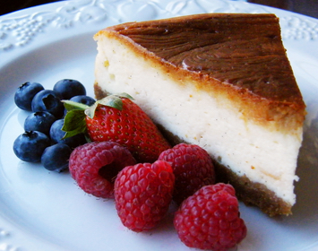

1 What is Open Research
What is open research? There are many different definitions, and these may vary from discipline to discipline and across research methodologies. Here are a couple of examples:
Open research … relates to how research is performed and how knowledge is shared based on the principle that research should be as open as possible.
UKRI, 2025
Researchers around the world, in all disciplines, store, share and reuse their outputs with the wider community, so everyone can access insights and knowledge much sooner, helping to advance their work and support reproducibility.
Wellcome, 2025
Simply, open research is a way of doing research that focuses on being transparent, honest, and thorough. It’s about making sure that all the steps of a study are clear and accessible, so that other researchers can understand, verify, and build upon the methodology and findings. It is an open door to research evidence, where everyone can see what’s available and contribute to the collective pool of knowledge.
No matter what your career stage, it is important to learn about how open research applies to your discipline, so that you can better assess the quality of research in your field and conduct more open research yourself. By the end of this course, you will have a good understanding of the principles underlying open research, and a set of practical techniques you can use to translate these abstract principles into action.
1.1 Examples of open research projects
To give you an idea of what open research can look like, here are some examples. It is a good idea to open these in a new tab or window (right mouse click or long press), so you can easily return to this page:
Example 1: The International Virtual Observatory Alliance (IVOA) is an impressive project in astronomy. IVOA is a framework that allows astronomical data to be shared and accessed globally. Over the years, the IVOA has developed standards and protocols to facilitate the seamless integration of data from various observatories, making it available to the global community. Have a play around with ESA Sky (built on IVOA protocols) yourself!
Example 2: The mRNA Vaccine Technology Transfer Hub is an innovative project in the field of biotechnology and global health. Established by the WHO (World Health Organization) to facilitate the widespread production of mRNA vaccines, this hub provides training, resources, and support to manufacturers in low- and middle-income countries. This openness enables a broader range of producers to develop mRNA vaccines, helping to combat pandemics and improve global health security.
Example 3: The Education Endowment Foundation (EEF) funds rigorous, high-quality evaluations of educational interventions. They are conducted by independent evaluators rather than the team that initially developed the intervention. All studies are registered ahead of time and the evaluation protocol is published in advance. All study findings are published on the EEF website, regardless of the outcome of the study.
Example 4: The Pelagios Network is an inspiring example from the humanities. It is a community of researchers, data scientists and curators who use linked data methods and tools to investigate the past. Their interests are wide-ranging (history, language, archaeology, conservation, etc.) and span the field of cultural heritage, including universities, galleries, libraries, archives and museums. There’s more on this project in the next section.
1.1.1 Spotlight: the Pelagios Network
The Pelagios Network uses linked open data to share information and support collaboration between scholars. The basic idea of linked open data goes back to the pioneers of the World Wide Web. It is a powerful way to freely use and distribute information.
Throughout this course, we use videos to present perspectives on open research. Take a little time to write notes on these videos.
Our first video, funded by AHRC and created by Too Tall Productions, takes you on a whistle-stop tour of how the Pelagios Network uses linked open data. As you watch, think about why this has the potential to be a great tool for research.
Video 1: Linked open data, what on earth is that?
Presenter: The archaeologist Winifred Lamb was a pioneer, not only in her research, but as a female in an occupation dominated by men.
Winifred Lamb: Yes, but the research is so slow!
Presenter: Excuse me?
Winifred Lamb: Have you ever heard of linked open data?
Presenter: No.
Winifred Lamb: Right. When I’m fortunate enough to find an object such as this, I want to know more about it and how it links to other objects. But with the current research methods, researching objects and sites can take ages. I have to take a car, a plane, a bus to the library to find a book to look up which museum has the object I want to compare my object with, only to discover it’s on loan to a museum in Los Angeles. But these days we have a thing called the World Wide Web.
People like me put their knowledge and research up there for all to see, so it can be viewed by anyone anywhere in the world, and it all links together. It’s called ‘linked open data’. And it can help us do research at lightning speed. When you put data out there on the web for all to see, and if we collaborate to help link this data, then that’s when we get linked open data. It means objects like this can talk to other objects all around the world. Locations, people, artifacts, books, we can link anything.
Members of the Pelagios community and friends of the Linking Islands of Data network have used the new technology to enrich the writings of the traveller Pausanias. His first-hand accounts of ancient Greece now link to enhanced information. This can lead to museum records, numismatic collections, and catalogues of Greek pottery.
In this way, linked open data can help us make meaningful connections and tell new stories which traditional methods of research could never achieve. And what’s more it can be accessed from anywhere in the world. So, through collaboration, we can all help make linked open data truly powerful.
Video 2: Using linked open data
Now listen to Professor Elton Barker, classicist and co-founder of the Pelagios Network, to get the backstory. He talks about the very first attempts at collaboration, and how linked open data has helped him with his own research. As you watch the video, think about how this kind of resource could also help with other types of research.
Click to download videoSo my name is Elton Barker. I’m a professor of Greek literature and culture at The Open University. That basically means I read a lot of ancient Greek literature and put that into its cultural and political context. But I’m also interested in the stories that we can extract from ancient Greek narratives in terms of their spatiality. So we don’t have maps of the ancient world, but we do have a lot of spatial knowledge embedded in texts.
So Pelagios, in its initial form, this goes back to 2012, I think. The proof of concept was working with the Persius classical library in the States, lots of people know that, it’s a fantastic resource - the German archaeological database, Arachne, and also the Pleiades Gazetteer. These were our three external partners and through these three external partners, we were able to come up with this lightweight method of connecting data, basically connecting their information.
So what can linked open data do for you? Well, let me give an example from a project that I’m working on. The title is the Digital Periegesis, which basically means a digital ‘going around’. It’s an echoing of a title of an ancient Greek narrative written in the second century CE, by this Greek called Pausanias. And he gives this deep dive into the Greek mainland. He doesn’t just talk about Athens, he takes you into Athens and he talks about the sites in Athens down to the ground level.
So not just there’s the Acropolis, but he takes you into inside the temple, he talks about the statues, the paintings, it’s a level of granularity you don’t get anywhere else. And one quick win there, of course, is that we can then visualise the places that he visited , and draw a line, and kind of follow Pausanias’ footsteps.
But critically, - this is where the linked open data comes in - there are two things I think are really interesting. The first is, as you are following Pausanias around, you can also link out to other materials. Because Pausanias, I’ve mentioned, he talks about statues, he talks about paintings.
Now, we have this information in other resources, the German archaeological database again comes back. They have great resources in Athens and elsewhere. So as you are moving through Pausanias’ text and he’s describing these objects on the ground, you can link out from the text and go and have a look. The second critical thing, and this is where I think linked data gets really exciting, is that you can discover stuff that he doesn’t talk about. Let me give you one example.
In book one, he’s in Athens, he’s moving around Athens. He’s moving around the central marketplace of Athens and moving to talk about the great Olympian Temple of Zeus. You can see it from the map. But then using linked data means we can bring in other information about that area. So what other artefacts are in that area? And one artefact that is shown is the Arch of Hadrian.
Now that appears on our map because that information has been published as linked data, by the Pleiades Gazetteer. But it’s not in Pausanias. So that already starts to ask us really interesting questions. Why does he not talk about the Arch of Hadrian? It’s not as if he couldn’t have seen it. It’s still there in Athens. You can go and look at the Arch of Hadrian now. He would probably have had to walk through the Arch of Hadrian to get to the Temple of Zeus. So why not mention it? I think this idea of using linked data to draw attention to the gaps, the absences, the biases in text, I think is one of the most exciting things about it.
Activity 1
Allow about 10 minutes.
Using your own notebook (online or offline), take some notes on what you have learned from both videos. How does the Pelagios Network use linked open data? What are the particular features of linked open data that Prof. Barker believes are most useful for scholars?
 When you are ready, press the button to view our comments.
When you are ready, press the button to view our comments.
Show / Hide Discussion
How the Pelagios Network use linked open data
The Pelagios Network researchers are interested in Greek objects and texts. Even if you come from a very different discipline, you should still be able to recognise how linked open data allows researchers in different institutions to collaborate, enriching the amount of data they can all access. The data is organised in a systematic way and given permanent identifiers, so the information can be scrutinised from different perspectives, and reused by researchers in other institutions or disciplines.
So far, you have been introduced to five examples of open research projects from astronomy, medicine, education and the humanities. What do these disparate projects, from very different academic disciplines, have in common? To a greater or lesser extent, they all share some foundational principles. In this course, open research will be broken down into three key facets that span across disciplines: transparency, integrity, and accessibility. Let’s start with transparency.
1.2 Transparency
The principle of transparency in research refers to the practice of being open and honest about all aspects of the research process.
In the TV show, Great British Bake Off, contestants compete in a UK-wide baking competition. In some tasks bakers are assessed on their creativity and flavour combinations, but in the show’s ‘Technical challenge’ they all have to follow the same recipe and make the same thing. Simple, right? Well, if it’s so simple, then why are there so many soggy bottoms?
Technical challenge instructions:
- Make the cake batter
- Bake the cake
- Ice the cake
Even when a recipe is provided, there can be a lot missing. In the technical challenge above, the instructions do not specify which ingredients should go into the cake batter, in what order they should be added, or how long the cake should be baked. A recipe for disaster!
A similar issue occurs in many academic research papers. Researchers describe what they did, but often not in enough detail for someone else to clearly understand what was done, or to repeat the study themselves. This means that another researcher hoping to reproduce the study may not able to reproduce it accurately. This is referred to as a study’s replicability.
Similarly, why are there so many amazing looking cakes on Pinterest, which become ‘Pinterest fails’ when people try to make them at home?

Sometimes it might be because the person sharing the beautiful picture of their cake tried thirty times before one turned out right, but fails to mention this, and instead tells readers how easy it was to make!
Similarly, researchers can fail to disclose versions of studies that they have tried, but that in their view didn’t ‘work’, choosing instead to share results from those studies that had the results that they desired.
Activity 2
 What are all the things you could include in a recipe to give the baker the best chance of success? Make a note in your notebook. Try to think of at least five before revealing the answers below.
What are all the things you could include in a recipe to give the baker the best chance of success? Make a note in your notebook. Try to think of at least five before revealing the answers below.
Show / Hide Discussion
Recipe for success?
The details will differ from person to person. In your answer, you might have included things like: pictures of each step, temperature of the oven, ingredients, length of baking time, size of tin, order of adding ingredients, how long to mix, and possible substitutions. It is likely that the details you included are those that will help determine whether your cake looks like the cat cake on the left, or the cat cake on the right. In the same way, researchers are more likely to be able to get the same result as other researchers if they can follow clear instructions on how to conduct the study.
1.3 Integrity
The principle of integrity refers to the degree of trustworthiness or believability of research findings. So, a transparent study is trustworthy and believable, right? Not necessarily! Transparency can be considered to be necessary, but not sufficient, for assessing integrity. Being transparent about how a study was done enables other researchers to better assess whether the study has integrity.
If you let your friend taste a cake you’ve made, but don’t tell them any of the ingredients that went into it, they might have a harder job working out why they do or don’t like it than if they know what went into it. For example, if they liked that the cake tasted citrussy, they would not know that was because of the grapefruit zest in the ingredients list (rather than maybe lemon juice or citric acid).
Activity 3
Allow about 10 minutes.
Now let’s assume you have been completely transparent about your ingredients. Can you think of any circumstances where there could still be doubts about your integrity? Write down some notes for yourself. 
Show / Hide Discussion
Considering integrity
There are lots of different ideas about what gives research findings integrity, and this will vary greatly depending on the field and research methodology. One important distinction is between qualitative and quantitative methodologies. In the next section, you’ll find out how this can fundamentally affect how researchers think about integrity.
1.4 Quantitative research
Quantitative research deals with numbers, aiming to quantify phenomena and establish patterns or relationships.
A quantitative researcher interested in baking might be interested to know how many chocolate chips are needed to make the most delicious chocolate chip cookie. They decide to make three batches of cookies: one where each cookie has five chocolate chips, one where each has ten chocolate chips and one where each has fifteen chocolate chips. They ask participants to eat one of each cookie type and rank each cookie type from 1 (worst cookie) to 3 (best cookie). In other words, the researcher uses numerical (quantitative) data to work out how to make the most delicious cookie.
When conducting quantitative research, researchers often try to remove themselves as much as possible from the research, aiming for objectivity (although there is considerable debate about whether this is possible!). As such, quantitative researchers believe that the replicability of a study is of the utmost importance for that study to be considered to have integrity. This means that when another researcher conducts the same study, they should get the same results.
1.5 Qualitative research
Qualitative research focuses on understanding qualities, meanings and contexts through non-numerical data like words, images or observations.
A qualitative researcher interested in how to make the most delicious chocolate chip cookie would take a different approach to the quantitative researcher. They might ask participants to describe the best and worst chocolate chip cookies they’ve ever eaten, and what they liked or disliked about them.
In qualitative research, objectivity is seldom desired or even considered possible. Instead, subjectivity is embraced explicitly, and researchers may include their own perspectives when writing up their papers. They wouldn’t necessarily assume that if someone else conducted the same study they would get the same results due to the complex interplay between the context of the participants and unique positionality of the researchers.
So qualitative and quantitative researchers often have different opinions about whether a study needs to be replicable in order to have integrity.
It’s important not to assume that there’s only one way for research to have integrity, and to understand the importance of different ways of doing research. The cheesecake below might look burnt to someone who is used to non-baked cheesecakes, but will look perfect to someone who is used to baked cheesecakes!

Activity 4
Allow about 10 minutes.
In this activity, you will have the chance to test your understanding of ‘transparency’ and ‘integrity’ in open research. Read the following vignette, and decide whether it is an example of research that has transparency, whether it has integrity, transparency and integrity, or neither?
Dr. McGonagle is conducting a study on the effects of a new drug on psoriasis. She publishes her methodology, including how participants were selected, how the drug was administered, and how data were collected and analysed. She also shares her raw data and statistical analysis code publicly, allowing others to verify her results or conduct their own analysis. She clarifies in her methodology that she isn’t planning on comparing the new drug to anything else.
 Make a note of your thoughts before revealing our comments.
Make a note of your thoughts before revealing our comments.
Show / Hide Discussion
Does the research have both transparency and integrity?
Dr. McGonagle has been transparent by publishing all the details of her study. However, the results from her research will show less integrity because she hasn’t compared the new drug to anything else. To increase the integrity of her research, she could compare the new drug to an existing drug and/or a placebo.
1.6 Accessibility
The principle of accessibility refers to ensuring that all who are interested are able to consume, evaluate, and otherwise interact with research products (e.g. data, results) and processes (e.g. methods). Even when research is transparent and has integrity, if only a limited group can access the outcomes or outputs of this research, it is not truly open.
Asking people to pay to read a hidden recipe for the best cake ever means that only certain people will be able to afford to make it. This may not seem like the end of the world for cake, because cake is a luxury. We might even hope that the reason the recipe is behind a paywall is so that the author of the recipe can be paid for the hard work they put into developing it, as well as covering the costs to the website of editing and hosting the content. However, research is a bit different.
One reason for this is that the outputs of research are not a luxury, as research is used predominantly to solve the world’s problems! Another reason is that much research is publicly funded, meaning the public has a right to access the products of this research. Also, when research is behind a paywall (e.g. published in a journal where you have to pay to access articles), authors don’t get any of the money that people pay to read the article.
If authors want to make their article openly available to everyone, they usually have to pay for this themselves. That’s like a recipe creator either having to pay to have their recipe openly listed on a website, or the website charging for people to read the recipe which the recipe creator gave them for free.
Accessibility is about more than just making the products of research available for free. Even if all research articles were free to read, if the public isn’t able to understand them, then they are useless! Converting a complicated recipe into bullet points, adding hints and tips, and translating it into different languages or adapting it for different accessibility needs, will mean that many more people are able to make the same recipe than if only the original version is provided.
To publish an article openly in the famous journal Nature, researchers have to pay almost £9,000 (in 2024, at the time of writing; or US$12,000). Reflect on how APCs affect researchers in the Global South, and how journals might address this. Then, look up whether Nature has any ways of addressing this (clue: search for ‘APC waiver’).
1.7 Quiz
How much have you learned? Take the self-test quiz below to find out!
- Which of the following statements is not true:
Feedback: Without transparency, we cannot assess whether or not research has integrity.
- Research can be transparent without having integrity. False
- Research can have integrity without being transparent. True
- Research can be accessible without being credible. False
- Research can be transparent without being accessible. False
- What does the principle of ‘integrity’ refer to in research?
Feedback: Being open and honest about all aspects of the research process relates to transparency, and ensuring that everyone has access to all research outputs is accessibility. Some would consider whether or not a study is replicable to be an aspect of integrity, but integrity encompasses many other factors.
- Ensuring that everyone has access to all research outputs False
- Whether or not a study is replicable False
- The believability or trustworthiness of research findings True
- Being open and honest about all aspects of the research process False
- Why is it important for researchers to provide detailed information about how a study was conducted? (Select one or more)
Feedback: These three are important academic reasons to provide detailed information about how a study was conducted – the researcher’s ego is not!
- So that other researchers can repeat the same study again True
- To make it easier for readers to understand what was done in the study True
- To enable other researchers to better assess the integrity of the study True
- To prove that the researcher’s work is outstanding False
- What is an example of a lack of transparency? (Select one)
Feedback: By not being transparent about how you conducted your study, others will find it difficult to understand what was done, assess the credibility of your study, and repeat the same study again. The other options do not refer to transparency, they relate to other principles of open research.
- Not fully describing how you conducted your study True
- Using an out-dated statistical method False
- Publishing your article behind a paywall False
- Sharing participants’ identifiable information False
- What is an example of a lack of accessibility?
Feedback: If an article is published in a journal behind a paywall, only those who can afford it can access it. Similarly, if researchers must pay to publish their article, then only researchers who have the funding to do this can publish. Red and green text could make an article less accessible for those with one type of colour-blindness. Even if an article is published openly, if there is no non-specialist summary for the public, then they still may not be able to learn from the research.
- Researchers having to pay thousands of pounds to publish their article True
- An article written in a very technical way, with no summary for the public True
- An article published on publicly accessible website False
- A research paper written using green and red text True
- An article published in an online journal which readers have to pay to download articles from True
1.8 Summary
In Week 1, we have briefly introduced the principles of transparency, integrity, and accessibility in open research. You’ve learned how they can interact with each other.
As you progress through the course, you will explore these open research principles in more depth, across disciplines and research methodologies. More importantly, you will learn how to apply them to your own research. In the final week, we will discuss ways you can commit to open research and get involved in different open research communities.
Next week, we will take a deeper dive into transparency.
1.9 References
Barker et al (2024): Digital Periegesis (GAMA)
Available at: https://www.periegesis.org/en/ articles.php?acid=1
Driver et al (2009): GAMA: towards a physical understanding of galaxy formation, Astronomy & Geophysics, Volume 50, Issue 5, pp. 5.12-5.19.
Available at: https://academic.oup.com/astrogeo/article/50/5/5.12/194415
EEF (2024): A School’s Guide to Implementation
Available at: https://educationendowmentfoundation.org.uk
Farran, E. K., Silverstein, P., Ameen, A. A., Misheva, I., Gilmore, C.: Open Research: examples of good practice and resources across disciplines
Available at: https://osf.io/preprints/osf/3r8hb
GAMA Team (2024): The Galaxy and Mass Assemby (GAMA)
Available at: https://www.gama-survey.org/
Hanisch, R and Quinn, P (2003): The International Virtual Observatory
Available at: https://www.ivoa.net/about/TheIVOA.pdf
International Virtual Observatory Alliance (2024): The Virtual Observatory (IVOA) Available at: https://www.ivoa.net
Pelagios Network (2024): The Pelagios Network
Available at: https://pelagios.org
Pelagios Network (2024): What is linked open data?
Available at: https://pelagios.org/linked-data
UKRI (2025): Ensuring Open Research
Available at: https://www.ukri.org/what-we-do/supporting-healthy-research-and-innovation-culture/open-research/
Wellcome (2025): What is Open research?
Available at: https://wellcome.org/what-we-do/our-work/research-enviornment/open-research
WHO (2024): The mRNA vaccine technology transfer hub
Available at: https://www.who.int/initiatives/the-mrna-vaccine-technology-transfer-hub